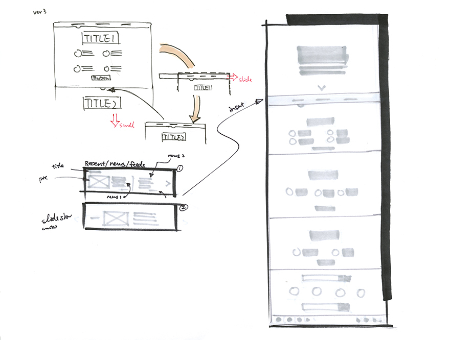
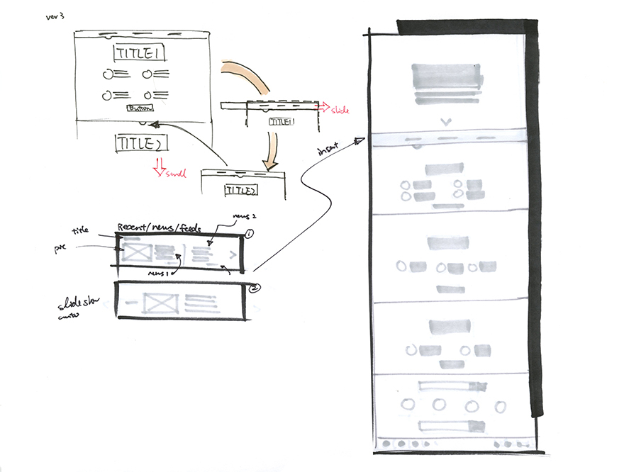

STE(A)M is a redesign of the website for STE(A)M Truck of Community Guild in Atlanta. Reconstructing the site from the perspectives of future growth and clearer organization image provides more clarity and value for STE(A)M Truck and the expansion of the program.
A quick look at the current site has revealed room for improvements.
The overall color palette is cold color but the value difference and the grey tone make the site feel deep/overpowering, less inviting and approachable.
The different sizing and alignment of each element reduce the clarity needed to deliver clearer information.
Repeated, unsorted and overloaded information could bring an overwhelming feeling rather than tell a convincing story.
With the issues found on the current site, next I need to gather requirements from business, design and user standpoints.
Jason Martin, the founder of the program, points out his vision of the expanding the program in the future, and thus the new website will play a role in promoting the program and encouraging involvement.
To meet this business goal, delivering and emphasizing its initiative and value would be the core function of the new website, which drives the design to more than a visual revamping.
Analyzing the structure and sections of the current site, I find two main user groups are organizers/partners/sponsors and parents. The fringe audience would be some other visitors and students who participated in the program.
However, the business goal entails a new message: students should also be part of the main user groups because they are the participants.
Middle School Students
The new user group has the following traits and characteristics:
If STE(A)M TRUCK is a service design, then students can also benefit from pre-service and post-service phases, which inform their primary actions.
Combining all user and task analysis suggests four sections that are suited to handle the functions of relevant tasks: Explore, About, Contact.
 

Considering STE(A)M TRUCK has established its image, I decide to expand rather than redesign the brand. Thus I keep and focus on the different tints and shades of the green the current version carries.
With a soft and comfortable color tone, I choose the typography above to reinforce the relationship between the web and the audience.
While the slabs on Arvo enhance readability, the boldness on Big Johna sets a child-friendly atmosphere.
*contents are subjects to change